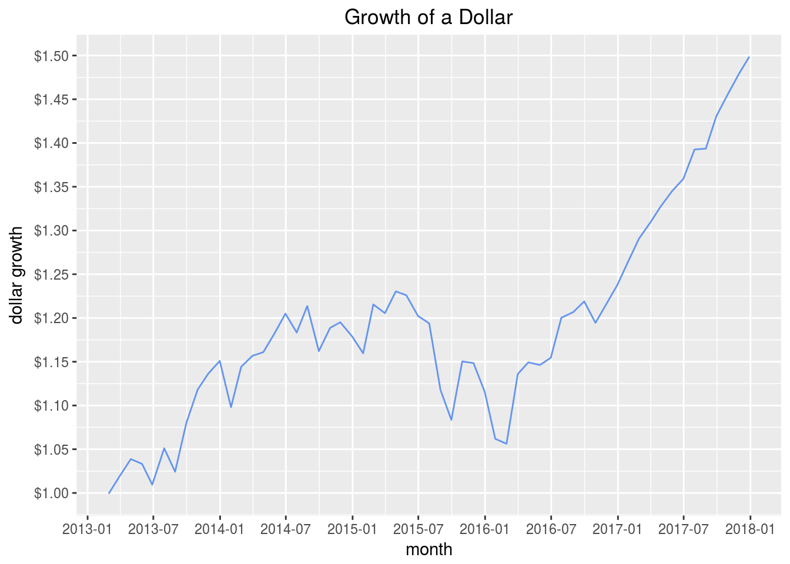

Chapter 3 Growth of a dollar
We have covered the process of importing daily price data for 5 assets, converting to monthly log returns for those assets, and then converting to portfolio returns after assigning weights to those assets. Next we want to convert those portfolio returns to the growth of a dollar over time, so that each month’s observation is not a monthly return but rather how a dollar invested would have grown cumulatively.
One method for this calculation is to add 1 to our monthly returns and take the cumulative product.
portfolio_growth_byhand <- cumprod(1 + portfolio_returns_byhand$returns)
tail(portfolio_growth_byhand)## returns
## 2017-07-31 1.393
## 2017-08-31 1.394
## 2017-09-29 1.431
## 2017-10-31 1.456
## 2017-11-30 1.479
## 2017-12-29 1.499That cumprod(1 + returns) is what the built-in functions will be handling for us under the hood but we will go through them all to be sure they match and discover new code flows.
Portfolio Growth in the xts World
Let’s turn to the xts world, where our first method is translate directly from asset returns to portfolio growth with the same Return.portfolio() function as we used to calculate portfolio returns. The difference from before is that we include the argument wealth.index = 1. This tells the function to calculate the growth of a dollar, as if our wealth started at $1 invested.
portfolio_growth_xts_skip_step <-
Return.portfolio(asset_returns_xts,
wealth.index = 1, weights = w, rebalance_on = "months") %>%
`colnames<-`("growth")
tail(portfolio_growth_xts_skip_step)## growth
## 2017-07-31 1.393
## 2017-08-31 1.394
## 2017-09-29 1.431
## 2017-10-31 1.456
## 2017-11-30 1.479
## 2017-12-29 1.499The second method makes use of the portfolio returns object that we calculated earlier. We take the object portfolio_returns_xts_rebalanced_monthly and pass it to Return.portfolio(). We don’t need to supply weights but we do again set wealth.index = 1.
portfolio_growth_xts_rebalanced_monthly <-
Return.portfolio(portfolio_returns_xts_rebalanced_monthly,
wealth.index = 1) %>%
`colnames<-`("growth") These two methods yield the same result for the growth of a dollar in our portfolio.
tail(portfolio_growth_xts_skip_step)## growth
## 2017-07-31 1.393
## 2017-08-31 1.394
## 2017-09-29 1.431
## 2017-10-31 1.456
## 2017-11-30 1.479
## 2017-12-29 1.499tail(portfolio_growth_xts_rebalanced_monthly)## growth
## 2017-07-31 1.393
## 2017-08-31 1.394
## 2017-09-29 1.431
## 2017-10-31 1.456
## 2017-11-30 1.479
## 2017-12-29 1.499At first glance, the first method might seem to be better. It is more concise because we skip the step of converting asset returns to portfolio returns. But that skipping has a cost because we no longer have an object of monthly portfolio returns, and that means we cannot visualize those returns or calculate their standard deviations, skewness etc.
Maybe that’s not important to our project, or maybe it’s crucial. Either way, be aware that skipping the step of calculating monthly asset returns means we can’t work with those returns.
Portfolio Growth in the Tidyverse
We have object of returns stored as portfolio_returns_dplyr_byhand and we can use that call to cumprod(1 + port_returns) along with mutate() to calculate growth of a dollar. I want to keep only the growth calculation so will delete the portfolio returns column with select(-port_returns).
portfolio_growth_dplyr_byhand <-
portfolio_returns_dplyr_byhand %>%
mutate(growth = cumprod(1 + port_returns)) %>%
select(-port_returns)
tail(portfolio_growth_dplyr_byhand)## # A tibble: 6 x 2
## date growth
## <date> <dbl>
## 1 2017-07-31 1.39
## 2 2017-08-31 1.39
## 3 2017-09-29 1.43
## 4 2017-10-31 1.46
## 5 2017-11-30 1.48
## 6 2017-12-29 1.50Portfolio Growth in the tidyquant World
On to a tidyquant method for calculating growth of a dollar. Very similar to the xts method, we can go direct from asset returns to portfolio growth with the following code chunk. We use the tq_portfolio() function, pass it asset_returns_long, along with a weights vector and wealth.index = 1.
portfolio_growth_tq_rebalanced_monthly <-
asset_returns_long %>%
tq_portfolio(assets_col = asset,
returns_col = returns,
weights = w,
col_rename = "growth",
rebalance_on = "months",
wealth.index = 1)That method again skipped our important step of first finding monthly returns. Maybe we are fine with that as long as we are aware of it.
For the sake of fun, let’s combine the tidyverse and tidyquant for a code flow that still relies on those monthly returns. We will use mutate() from the dplyr package and create a new column called ’growth with mutate(growth = cumprod(1 + returns)).
portfolio_growth_tidy_tq_combined <-
portfolio_returns_tq_rebalanced_monthly %>%
mutate(growth = cumprod(1 + returns)) %>%
select(-returns)Have a look at our results thus far.
tail(portfolio_growth_byhand)## returns
## 2017-07-31 1.393
## 2017-08-31 1.394
## 2017-09-29 1.431
## 2017-10-31 1.456
## 2017-11-30 1.479
## 2017-12-29 1.499tail(portfolio_growth_dplyr_byhand)## # A tibble: 6 x 2
## date growth
## <date> <dbl>
## 1 2017-07-31 1.39
## 2 2017-08-31 1.39
## 3 2017-09-29 1.43
## 4 2017-10-31 1.46
## 5 2017-11-30 1.48
## 6 2017-12-29 1.50tail(portfolio_growth_tq_rebalanced_monthly)## # A tibble: 6 x 2
## date growth
## <date> <dbl>
## 1 2017-07-31 1.39
## 2 2017-08-31 1.39
## 3 2017-09-29 1.43
## 4 2017-10-31 1.46
## 5 2017-11-30 1.48
## 6 2017-12-29 1.50tail(portfolio_growth_tidy_tq_combined)## # A tibble: 6 x 2
## date growth
## <date> <dbl>
## 1 2017-07-31 1.39
## 2 2017-08-31 1.39
## 3 2017-09-29 1.43
## 4 2017-10-31 1.46
## 5 2017-11-30 1.48
## 6 2017-12-29 1.50tail(portfolio_growth_xts_rebalanced_monthly)## growth
## 2017-07-31 1.393
## 2017-08-31 1.394
## 2017-09-29 1.431
## 2017-10-31 1.456
## 2017-11-30 1.479
## 2017-12-29 1.499Before we move on to Shiny, let’s explore one more method using the purrr package from the tidyverse.
purrr contains a lot of useful functions and the map() family is the most commonly used (we will cover it later on), but another powerful function is accumulate(). As the name implies, this function allows us to accumulate calculations in a recursive way, meaning we can use prior calculations the same way we would with cumprod(). We will make use of this when we get to Monte Carlo simulations.
portfolio_growth_purrr <-
portfolio_returns_tq_rebalanced_monthly %>%
mutate(growth_1 = accumulate(1 + returns, `*`),
growth_2 = accumulate(1 + returns, function(x, y) x * y)) %>%
select(date, growth_1, growth_2)Note that we used accumulate() in two ways: accumulate(1 + returns, *) and accumulate(1 + returns, function(x, y) x * y). That is two new ways to calculate growth but in general it demonstrates a nice way to introduce a new package and new function to our team’s toolkit.
When we introducing a new functiona or package, most important is to explicitly flag it and explain it. Without that, our collaborators might miss the new function or package altogether, especially if it is an internal package. Next, when possible, use the new tool to accomplish a task that we also have accomplished in a well-known way. Here, we introduce accumulate() to calculate growth of a dollar, having already done so with cumprod() and built-ins from PerformanceAnalytics and tidyquant. We have created a familiar environment in which to introduce a new tool and if in the future we use that tool in a complex environment (as we will when running Monte Carlo simulations), our collaborators will have got a prior introduction.
As a sanity check for all these methods, let’s run a final comparison.
final_comparison <-
merge.xts(portfolio_growth_byhand,
portfolio_growth_xts_skip_step,
portfolio_growth_xts_rebalanced_monthly) %>%
tk_tbl(preserve_index = TRUE, rename_index = "date") %>%
bind_cols(portfolio_growth_dplyr_byhand) %>%
select(-date1) %>%
bind_cols(portfolio_growth_tq_rebalanced_monthly) %>%
select(-date1) %>%
bind_cols(portfolio_growth_tidy_tq_combined) %>%
select(-date1) %>%
bind_cols(portfolio_growth_purrr) %>%
select(-date1) %>%
`colnames<-`(c("date", "by_hand", "xts1", "xts2", "dplyr", "tq", "tidy_tq", "purrr1", "purrr2"))
head(final_comparison)## # A tibble: 6 x 9
## date by_h… xts1 xts2 dplyr tq tidy… purr…
## <date> <dbl> <dbl> <dbl> <dbl> <dbl> <dbl> <dbl>
## 1 2013-02-28 0.999 0.999 0.999 0.999 0.999 0.999 0.999
## 2 2013-03-28 1.02 1.02 1.02 1.02 1.02 1.02 1.02
## 3 2013-04-30 1.04 1.04 1.04 1.04 1.04 1.04 1.04
## 4 2013-05-31 1.03 1.03 1.03 1.03 1.03 1.03 1.03
## 5 2013-06-28 1.01 1.01 1.01 1.01 1.01 1.01 1.01
## 6 2013-07-31 1.05 1.05 1.05 1.05 1.05 1.05 1.05
## # ... with 1 more variable: purrr2 <dbl>tail(final_comparison)## # A tibble: 6 x 9
## date by_h… xts1 xts2 dplyr tq tidy… purr…
## <date> <dbl> <dbl> <dbl> <dbl> <dbl> <dbl> <dbl>
## 1 2017-07-31 1.39 1.39 1.39 1.39 1.39 1.39 1.39
## 2 2017-08-31 1.39 1.39 1.39 1.39 1.39 1.39 1.39
## 3 2017-09-29 1.43 1.43 1.43 1.43 1.43 1.43 1.43
## 4 2017-10-31 1.46 1.46 1.46 1.46 1.46 1.46 1.46
## 5 2017-11-30 1.48 1.48 1.48 1.48 1.48 1.48 1.48
## 6 2017-12-29 1.50 1.50 1.50 1.50 1.50 1.50 1.50
## # ... with 1 more variable: purrr2 <dbl>8 routes to the same results for dollar growth! A lot of grinding but should any of our colleagues wish to reproduce, resuse or extend our results, a plethora of code paths is available to them. Why might those paths be important? On a team of 10 R/finance ninjas, there’s a good chance that one coder will prefer the xts world, one will prefer tidyquant and/or one will prefer the tidyverse and hand-rolled functions. It’s not the case that every document needs to include all these different paths but it’s good practice to have one file in the team’s library that can be used as a global reference point. If language analogies are appealing, we can think of this as a Rosetta Script or where to turn when someone wonders what’s the equivalent of this analytical path using another set of packages.
Beyond the flexibility of different code paths, the various object structures lend themselves to different visualizations techniques, which is a reason that some coders might prefer different paths.
Visualizing Portfolio Growth
We start again in the xts world via highcharter. The first two lines shoule like familiar from our previous charts. Let’s add more aesthetics.
I want a title and add it with hc_title(text = "Growth of a Dollar") and the y-axis label to be on left-hand side with a $ sign. We add that with hc_yAxis(title = list(text = "growth of dollar"), opposite = FALSE, labels = list(format = "${value}").
highchart(type = "stock") %>%
hc_add_series(portfolio_growth_xts_rebalanced_monthly,
name = "Portfolio", color = "cornflowerblue", lineWidth = 1) %>%
hc_title(text = "Growth of a Dollar") %>%
hc_yAxis(title = list(text = "growth of dollar"),
opposite = FALSE,
labels = list(format = "${value}")) %>%
hc_add_theme(hc_theme_flat()) %>%
hc_navigator(enabled = FALSE) %>%
hc_scrollbar(enabled = FALSE)That’s a nice and efficient chart. An end user can quickly discern what would have happened to a dollar over time.
We can also use ggplot() for time series plotting if we wish to stay in the tidy world.
We start with the object portfolio_growth_purrr, and set our date column as the x-axis and growth_1 as the y-axis by calling ggplot(aes(x = date, y = growth_1)). We will add a $ sign to the y-axis label with scale_y_continuous(breaks = pretty_breaks(n = 10), labels = dollar) which requires loading the scales package.
library(scales)
portfolio_growth_purrr %>%
ggplot(aes(x = date, y = growth_1)) +
geom_line(colour = "cornflowerblue") +
ylab("dollar growth") +
xlab("month") +
ggtitle("Growth of a Dollar") +
scale_y_continuous(breaks = pretty_breaks(n = 10), labels = dollar) +
scale_x_date(breaks = pretty_breaks(n = 10))
The end results with ggplot or highcharter look similar though highcharter offers a bit more interactivity and the built-in date selection buttons.
3.0.1 Shiny Growth of a Dollar
Now we want to port our dollar growth work to a Shiny application so that an end user is able to:
- choose tickers and portfolio weights
- choose a start date
- choose a rebalancing frequency
- chart the growth of a dollar in the portfolio since the chosen start date
The final app can be seen here with full source code:
www.reproduciblefinance.com/shiny/portfolio-growth/

FIGURE 3.1: Portfolio Growth Shiny
The input sidebar is identical to that of our app on returns distribtution. We let the user choose 5 ticker symbols, 5 weights, a start date and rebalance period. The user then clicks ‘submit’ to fire up the reactives. Since it’s identical, we’re not going to review it here.
We will, though, review the difference substantive flow that is used to get portfolio growth. We use an eventReactive(), pass in tickers, weights, start date and frequency, but instead of calculating portfolio returns, we calculate portfolio growth. It’s not a copy paste from our first app, but it’s a similar structure. Since we use highcharter in this app, we go with the xts world and use Return.portfolio(asset_returns_xts, wealth.index = 1,...) - this is the same method we used in our previous growth calculation.
portfolio_growth_xts <- eventReactive(input$go, {
symbols <- c(input$stock1, input$stock2, input$stock3, input$stock4, input$stock5)
prices <- getSymbols(symbols, src = 'yahoo', from = input$date,
auto.assign = TRUE, warnings = FALSE) %>%
map(~Ad(get(.))) %>%
reduce(merge) %>%
`colnames<-`(symbols)
w <- c(input$w1/100, input$w2/100, input$w3/100, input$w4/100, input$w5/100)
prices_monthly <- to.monthly(prices, indexAt = "last", OHLC = FALSE)
asset_returns_xts <- na.omit(Return.calculate(prices_monthly, method = "log"))
portfolio_growth_xts <-
Return.portfolio(asset_returns_xts,
wealth.index = 1,
weights = w,
rebalance_on = input$rebalance) %>%
`colnames<-`("growth")
})At this point, portfolio growth is calculated and stored as portfolio_growth_xts() and our substantive work has been completed. Now we want to display the chart of the portfolio growth over time. Outside of Shiny, this would be a simple passing of the xts object to highcharter.
As with ggplot, Shiny uses a custom function for building reactive highcharter charts called renderHighchart(). Once we invoke that renderHighchart(), our code looks very similar to our previous visualization work as we use hc_add_series(portfolio_growth_xts(), name = "Dollar Growth", color = "cornflowerblue") to add our portfolio growth xts object to a chart.
renderHighchart({
highchart(type = "stock") %>%
hc_title(text = "Growth of a Dollar") %>%
hc_add_series(portfolio_growth_xts(), name = "Dollar Growth", color = "cornflowerblue") %>%
hc_navigator(enabled = FALSE) %>%
hc_scrollbar(enabled = FALSE)
})Next, we use ggplot() to create the same visual as above but in the tidy world. The code flow is quite similar to how we would normally create a line chart, except we first need to convert our xts object to a tibble with the tk_tbl(preserve_index = TRUE, rename_index = "date"). The tk_tbl() function is from the timetk package but is part of the tidyquant universe. After converting from xts to a data frame, we make our call to ggplot(aes(x = date)) and add a geom with geom_line(aes(y = growth), color = "cornflowerblue").
Note that the renderPlot() function is playing the same role as renderHighchart() above - it is alerting the Shiny app that a reactive plot is forthcoming after user inputs, instead of a static plot that is unchanging.
renderPlot({
portfolio_growth_xts() %>%
tk_tbl(preserve_index = TRUE, rename_index = "date") %>%
ggplot(aes(x = date) +
geom_line(aes(y = growth), color = "cornflowerblue") +
ylab("dollars") +
ggtitle("Growth of Dollar over time")
})Here is another snapshot of what the app looks like with the visualizations.
FIGURE 3.2: Portfolio Growth Shiny
Concluding
That concludes our work on portolio returns and growth. From a general data science paradigm perspective, we can think of this as mapping onto data import, wrangling and transformation where:
pulling daily prices from yahoo! Finance = data import
isolating adjusted prices and converting to monthly prices = data wrangling
converting to log returns, portfolio returns, portfolio growth = data transformation
We were painstaking about our process to provide our selves and collaborators with a nice data provenance, plus a variety of code paths for visualizing. In the following sections, we will see how having several foundational objects for portfolio returns and growth assist our more analytical work. Make sure the data frames and xts objects are familiar and intuitive because we will use them throughout the rest of the book but will assume that their structure and derivation were explained here in Section 1.